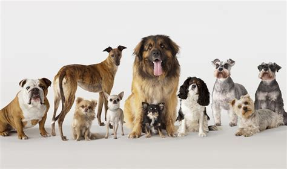
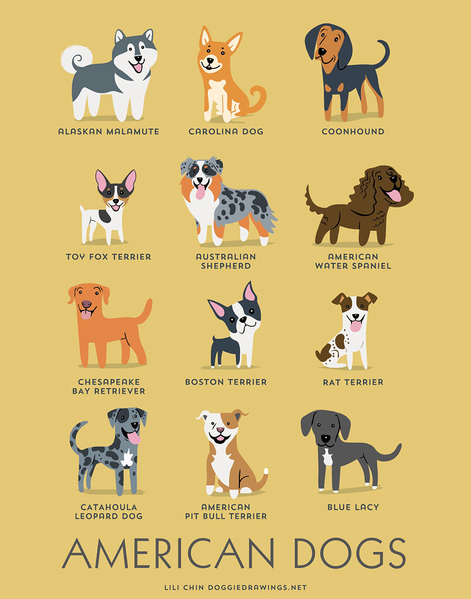
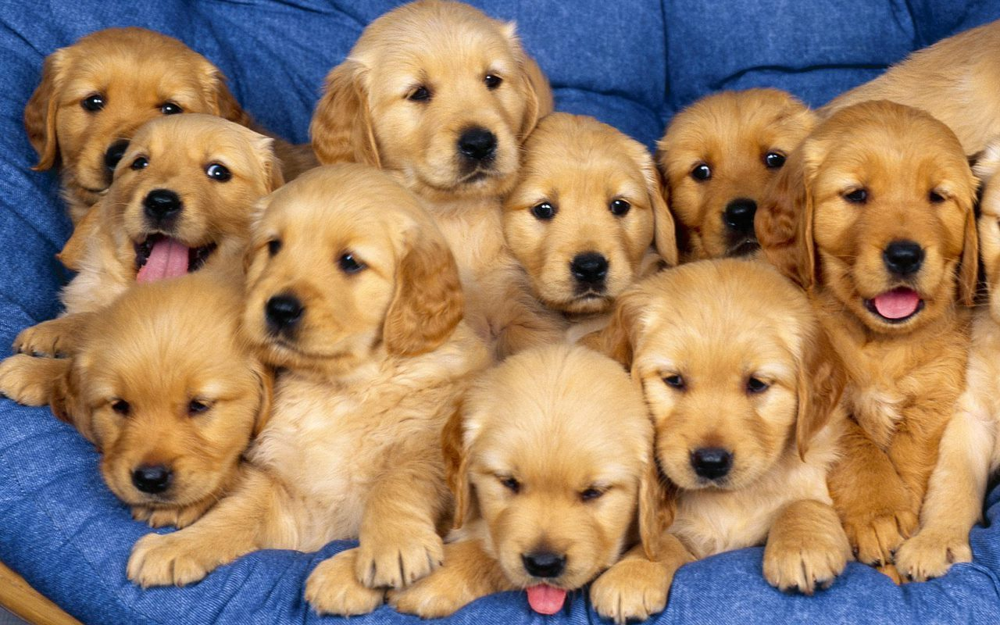

강아지는 우리 삶에 기쁨을 가져다줄 소중한 반려동물입니다. 이 웹사이트에서 다양한 품종과 특성, 그리고 효과적인 양육 방법을 알아보세요.
종류에 따른 특징


강아지 선택 시 고려 사항
- 성향과 라이프스타일 맞춤
반려동물을 키울 수 있는 시간과 공간을 충분히 고려해야 합니다.
- 입양 vs 구매
입양을 통해 돌봄이 필요한 강아지를 새로운 가족으로 맞이할 수 있습니다.
- 예산 및 관리비용
구매 비용 외에도 사료, 장난감, 병원 방문 등 지속적 관리 비용을 고려해야 합니다.
